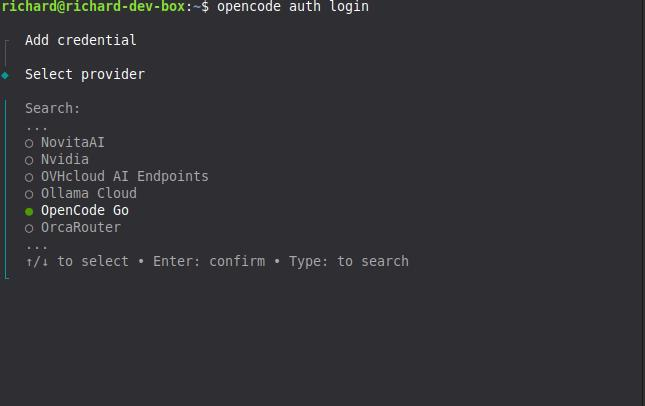
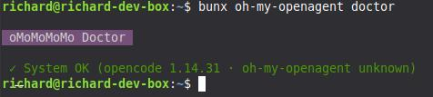
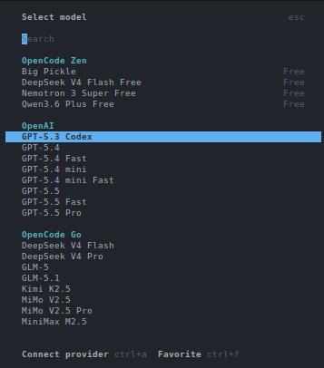

Table of Contents
- Introduction to Opencode
- Openweight Models
- OpenCode Go
- Installation of Opencode
- Windows
- Linux
- Post Setup
- Configuring Opencode (using Oh My OpenAgent)
- Installing via Build mode
- Configuring Oh My Open Agent
- Cost
- Cost by Model
- Conclusion
Setting up Opencode
Introduction to Opencode
Opencode is an open source AI coding agent that you can use from a terminal interface, a desktop app, or an IDE extension. If you like staying in the shell, the terminal UI is the main attraction. If you want something a bit more point and click, the desktop app exists too.
The project lives at github.com/anomalyco/opencode, has more than 160,000 GitHub stars, and is released under the MIT license. That matters to me because it means I am not locked into some opaque hosted tool with mystery behavior.
Out of the box, Opencode ships with two built in agents:
- build, the default agent with full access for actually doing work
- plan, a read only agent for analysis and planning
On the model side, Opencode supports more than 75 LLM providers through models.dev, including local models if you prefer to run things on your own hardware. Privacy is also a big selling point here. Opencode advertises a zero retention policy, which is a lot easier to live with than blindly pasting code into random web chatboxes.
Openweight Models
One of the more interesting parts of the Opencode ecosystem is how well it fits openweight models. That means you are not limited to the usual closed model lineup. You can use strong coding focused models from labs that publish openweight or more openly available model families, while still getting a polished agent workflow on top.
This matters because a lot of the newer coding friendly models people care about right now come from that world. Think DeepSeek, Kimi, GLM, Qwen, and MiniMax. If you have been hopping between providers just to try those models, Opencode gives you one interface for all of it.
These models are also available through OpenCode Go, which gives you reliable access without juggling a pile of separate accounts.
OpenCode Go
OpenCode Go is a low cost subscription for reliable access to popular open coding models. It costs $5 for the first month, then $10 per month after that. For a lot of people, that is the sweet spot between paying enterprise API prices and depending on flaky free endpoints.
The current OpenCode Go lineup includes:
- DeepSeek V4 Pro and DeepSeek V4 Flash
- Kimi K2.5 and Kimi K2.6
- GLM-5 and GLM-5.1
- Qwen3.5 Plus and Qwen3.6 Plus
- MiniMax M2.5 and MiniMax M2.7
- MiMo-V2.5 and MiMo Pro
Pricing is simple:
- $5 for the first month
- $10 per month after
There are also soft limits, which are currently listed at roughly:
- about $12 per 5 hours
- about $30 per week
- about $60 per month
OpenCode Go is designed with international users in mind, with models hosted in the US, EU, and Singapore. Another useful detail is that it uses the same API key as OpenCode Zen and shares the same console at opencode.ai/auth. So you are not managing two separate identities here.
When you reference a Go model inside Opencode, the model ID format looks like this:
opencode-go/
For example:
opencode-go/kimi-k2.6
Installation of Opencode
Windows
If you are on Windows, my strong recommendation is to use WSL, Windows Subsystem for Linux. Opencode feels much more natural in a Linux shell, and you avoid a few platform specific issues that can appear when running terminal heavy tooling natively on Windows.
One specific issue to know about: if you install Oh My OpenAgent directly on Windows (without WSL), the installer can create files named NUL in the project directory. NUL is a reserved device name on Windows, so these files are difficult to remove with standard tools and can break some file operations. If this happens, you can ask the Build agent inside Opencode to clean them up for you, or you can remove them from WSL if you have it installed.
That said, native Windows works fine for most users. The config and auth paths use XDG conventions even on Windows, so ~/.config/opencode/ and ~/.local/share/opencode/ resolve to %USERPROFILE%.configopencode and %USERPROFILE%.localshareopencode respectively.
First, open PowerShell as Administrator and install WSL:
wsl --install
Once WSL is installed and you are inside your Linux terminal, run:
curl -fsSL https://opencode.ai/install | bash
If you want alternative install methods, these are available too:
# If you use Chocolatey
choco install opencode
# If you use Scoop
scoop install opencode
# If you use npm
npm install -g opencode-ai
# If you use Bun
bun add -g opencode-ai
There is also a desktop app in beta available from opencode.ai/download.
Linux
On Linux, the quickest install, and the one I would recommend first, is:
curl -fsSL https://opencode.ai/install | bash
If you prefer npm, that works too:
npm install -g opencode-ai
You can also install it with other JavaScript package managers such as bun, pnpm, or yarn.
Homebrew is supported:
brew install anomalyco/tap/opencode
On Arch Linux:
sudo pacman -S opencode
Other install paths exist as well, including Docker, Mise, and Nix.
If you use the install script, the binary install directory priority is:
$OPENCODE_INSTALL_DIR
$XDG_BIN_DIR
$HOME/bin
$HOME/.opencode/bin
Post Setup
After installation, the next command you should care about is:
opencode auth login

That starts an interactive prompt where you choose a provider and enter the API key for it. Opencode stores those credentials in:
~/.local/share/opencode/auth.json
On Windows, this maps to:
%USERPROFILE%\.local\share\opencode\auth.json
If you are setting up both OpenCode Zen and OpenCode Go, you should run the auth flow twice.
First, log into OpenCode Zen:
opencode auth login --provider zen
Or, if you prefer the interactive prompt, just pick Zen there. Then go to https://opencode.ai/auth, sign in, and copy your API key.
Second, log into OpenCode Go:
opencode auth login --provider opencode
Again, you can also choose OpenCode Go from the interactive prompt. Both providers use the same web console at opencode.ai/auth, but they may receive different API keys depending on your account setup. Go is a subscription add on inside Zen, so you manage both from the same place even if the keys differ.
If you are already inside the TUI, you can also use:
/connect
To verify what providers are currently configured, run:
opencode auth list
Configuring Opencode (using Oh My OpenAgent)
If you want a much more specialized agent setup than the default Build and Plan pair, install Oh My OpenAgent. It is a plugin for Opencode that replaces the default agents with a larger roster of purpose built agents such as Sisyphus, Hephaestus, Prometheus, Atlas, Oracle, Librarian, Explore, and others.
Instead of one generic worker and one planner, you get an orchestrated set of agents tuned for different jobs. This works better once your tasks stop being trivial.
Before installing it, make sure you have:
- Opencode 1.4.0 or newer (should be if you followed the earlier steps)
- Bun installed, which is only needed for the installation step (To install bun, go to https://bun.sh/)
For users who already have Zen and Go set up, this non interactive install command is the recommended path:
bunx oh-my-openagent install --no-tui --claude=no --openai=no --gemini=no --copilot=no --opencode-zen=yes --opencode-go=yes
If you do not have a Claude subscription, Sisyphus may not work as well depending on your setup. The --opencode-zen=yes and --opencode-go=yes flags are both used because Zen and Go share the same API key and account.
Installing via Build mode
If you prefer to let Opencode handle the installation for you, start Opencode in the default build mode and paste this prompt:
Install and configure oh-my-openagent by following the instructions here: https://raw.githubusercontent.com/code-yeongyu/oh-my-openagent/refs/heads/dev/docs/guide/installation.md
The Build agent will fetch the guide, read the steps, and run the appropriate commands on your behalf. Use this if you do not want to copy paste CLI commands manually. You will still need to answer the subscription questions when the installer asks for them.
After the install finishes, verify the setup with:
bunx oh-my-openagent doctor

The main config file for Oh My OpenAgent lives here:
~/.config/opencode/oh-my-openagent.json
On Windows, this maps to:
%USERPROFILE%\.config\opencode\oh-my-openagent.json
Configuring Oh My Open Agent
After installing Oh My OpenAgent, start Opencode from your terminal:
opencode
If everything is wired up correctly, you should see agent names like Sisyphus, Hephaestus, Prometheus, or Atlas instead of only "Build" or "Plan".

Sisyphus is usually the default orchestrator, so you will most likely land there first.

Once you are in Sisyphus mode, open the model selector with:
/models

From there, change the active model to:
opencode-go/kimi-k2.6
It usually defaults to Claude, so change this right away if you want to follow the roster described here.
After that, give Sisyphus this instruction:
Update the OhMyOpenAgent LLM roster for the agents to what is inside @LLM-Roster.md which is located at the ~/.config/opencode/oh-my-openagent.json file. Note: If you're on Windows, the file is located at the %USERPROFILE%\.config\opencode\oh-my-openagent.json file.
The roster is a model assignment map. It tells Oh My OpenAgent which model each agent should prefer, what fallback chain to use, and which model families should back broader task categories. That way you are not using the same model for everything when different agents have different strengths.
Here is the openweight-only roster I use. Every primary and fallback is an opencode-go model. The roster below is shown as markdown tables for readability — the actual config file uses JSON format with model and variant fields for each agent and category.
That being said, here is the contents of LLM-Roster.md:
# Oh-My-OpenAgent LLM Roster
> Generated on 2026-04-27 from `~/.config/opencode/oh-my-openagent.json`
---
## Agents
| Agent | Role | Primary Model | Variant | Fallback Chain |
|-------|------|---------------|---------|----------------|
| `sisyphus` | Orchestrator (you) | `opencode-go/kimi-k2.6` | medium | `opencode-go/glm-5` (medium) |
| `hephaestus` | Build executor | **`opencode-go/deepseek-v4-pro`** | high | `opencode-go/kimi-k2.6` (medium) |
| `oracle` | High-IQ consultant | `opencode-go/glm-5` | high | `opencode-go/kimi-k2.6` (high) |
| `librarian` | External docs / GitHub | **`opencode-go/deepseek-v4-flash`** | — | `opencode-go/minimax-m2.7-highspeed` → `opencode-go/qwen3.6-plus` |
| `explore` | Codebase pattern search | **`opencode-go/deepseek-v4-flash`** | — | `opencode-go/qwen3.6-plus` → `opencode-go/minimax-m2.7-highspeed` |
| `multimodal-looker` | PDF / image analysis | `opencode-go/kimi-k2.6` | medium | `opencode-go/deepseek-v4-flash` (medium) → `opencode-go/glm-5` |
| `prometheus` | Planner | **`opencode-go/deepseek-v4-pro`** | high | `opencode-go/kimi-k2.6` (high) |
| `metis` | Pre-planning consultant | `opencode-go/kimi-k2.6` | high | `opencode-go/glm-5` (high) |
| `momus` | Plan critic | `opencode-go/deepseek-v4-pro` | xhigh | `opencode-go/glm-5` |
| `atlas` | General-purpose | `opencode-go/kimi-k2.6` | medium | `opencode-go/glm-5` (medium) → `opencode-go/minimax-m2.7` |
| `sisyphus-junior` | Focused executor | **`opencode-go/deepseek-v4-flash`** | medium | `opencode-go/kimi-k2.5` → `opencode-go/glm-5` (medium) → `opencode-go/minimax-m2.7` |
**Bold** = DeepSeek V4 models
### Special Configurations
| Agent | Special Setting |
|-------|-----------------|
| `sisyphus` | **ultrawork**: `opencode-go/kimi-k2.6` (high) with `thinking.budgetTokens: 16000` |
---
## Categories
| Category | Primary Model | Variant | Fallback |
|----------|---------------|---------|----------|
| `visual-engineering` | `opencode-go/kimi-k2.6` | high | `opencode-go/minimax-m2.7` |
| `ultrabrain` | `opencode-go/deepseek-v4-pro` | xhigh | `opencode-go/glm-5` |
| `deep` | `opencode-go/kimi-k2.6` | medium | `opencode-go/glm-5` |
| `quick` | `opencode-go/minimax-m2.7` | — | `opencode-go/deepseek-v4-flash` |
| `unspecified-low` | `opencode-go/kimi-k2.5` | medium | `opencode-go/minimax-m2.7` |
| `unspecified-high` | `opencode-go/kimi-k2.6` | medium | `opencode-go/glm-5` → `opencode-go/minimax-m2.7` |
| `writing` | `opencode-go/kimi-k2.6` | medium | `opencode-go/minimax-m2.7` |
| `artistry` | `opencode-go/deepseek-v4-pro` | xhigh | `opencode-go/glm-5` |
---
## Model Provider Summary
| Provider | Models Used |
|----------|-------------|
| **opencode-go** | `deepseek-v4-pro` (×4), `deepseek-v4-flash` (×4), `kimi-k2.6` (×5), `kimi-k2.5` (×2), `glm-5` (×4), `minimax-m2.7` (×4), `minimax-m2.7-highspeed` (×2), `qwen3.6-plus` (×2) |
---
## DeepSeek Insertions (2026-04-27)
| Agent | Previous Model | New Model | Rationale |
|-------|---------------|-----------|-----------|
| `hephaestus` | `opencode-go/glm-5.1` | `opencode-go/deepseek-v4-pro` | Best-in-class coding (93.5% LiveCodeBench) |
| `prometheus` | `opencode-go/glm-5.1` | `opencode-go/deepseek-v4-pro` | Best planning + coding combo |
| `explore` | `opencode-go/qwen3.6-plus` | `opencode-go/deepseek-v4-flash` | 1M context for codebase-wide search |
| `librarian` | `opencode-go/deepseek-v4-flash` | `opencode-go/deepseek-v4-flash` | 1M context for multi-repo docs |
| `sisyphus-junior` | `opencode-go/kimi-k2.5` | `opencode-go/deepseek-v4-flash` | Faster, cheaper, stronger than K2.5 |
| `oracle` | `opencode-go/glm-5` | `opencode-go/glm-5` | Kept openweight |
| `momus` | `opencode-go/deepseek-v4-pro` | `opencode-go/deepseek-v4-pro` | Kept openweight |
**Kept unchanged**: `metis` (Kimi K2.6 high), `multimodal-looker` (Kimi K2.6 — vision required).
Every agent and category runs on opencode-go models. If you add another subscription later, you can extend the fallback chains, but this setup works on its own.
Alternatively, you can modify the contents here with other agents you have like adding GPT-5.5 on your OpenAI subscription and it should work just as fine.
Cost
Here is a snapshot of actual usage costs from a 33-hour session using the openweight roster above. The totals are from the LLM Usage Dashboard:

The session ran 792 inferences over roughly 33 hours with a total cost of $5.94 and an average of $0.0075 per inference.
Cost by Model
kimi-k2.6 accounted for the bulk of the usage at 704 inferences and $5.79. deepseek-v4-flash came in second with 81 inferences at $0.13, followed by qwen3.6-plus at 2 inferences and $0.03. There were also 5 inferences on big-pickle at effectively $0.00.
To put this in perspective, running the same 792-inference session on Claude Opus would have cost significantly more — likely in the $50–$150 range depending on token counts — because Opus pricing is roughly an order of magnitude higher per token. Even Claude Sonnet would have run several times more expensive than this openweight setup.
Most of the cost goes to kimi-k2.6, which makes sense because it handles the bulk of the orchestration and reasoning tasks. DeepSeek V4 Flash is used for exploration and librarian work, so it stays cheap despite the large context windows. The overall average is well under a cent per inference, which keeps the total reasonable even for long sessions.
Conclusion
So, is it worth setting up Opencode with openweight models?
From my experience, absolutely. You get a fully capable AI coding agent without being locked into a single provider or paying premium API prices. The setup is straightforward, the roster is flexible, and the cost is hard to beat. For under $6 across a 33-hour session, I had access to multiple specialized agents handling everything from orchestration to codebase exploration.
If you are already paying for Claude or GPT subscriptions, this is a low-risk way to diversify your tooling. And if you are just getting started, OpenCode Go at $10 per month is a gentle entry point compared to enterprise API tiers. Either way, having options is the whole point.